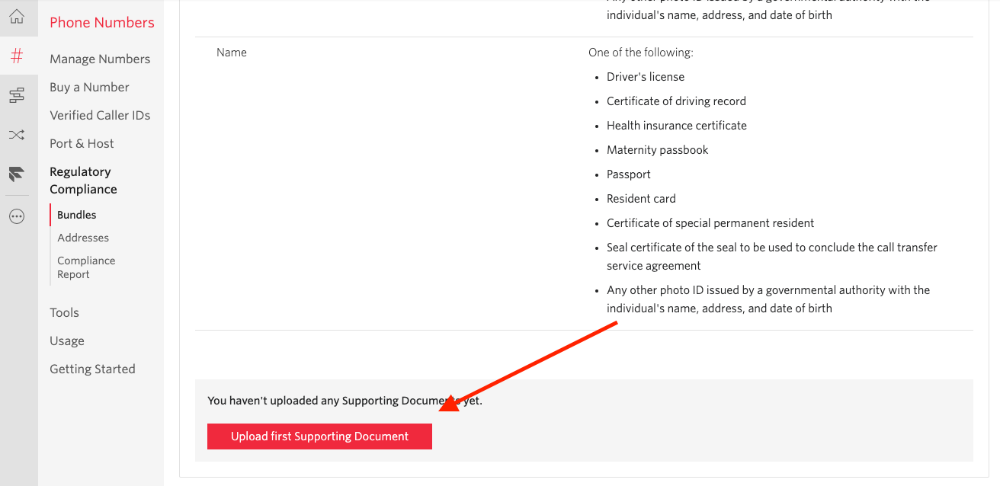

4. 日本の電話番号を取得する¶
この章では作成したFlexに紐付ける日本の電話番号の取得を行います。
Flexは立ち上げるとUSの電話番号が取得されます。 日本から電話をかけるとなると国際電話料金がかかってしまうため、本ハンズオンでは日本の電話番号を取得して使用します。
4-1. Regulatory Bundlesの申請¶
日本の電話番号を取得する際、国固有の規制により、電話番号のタイプごとに規制バンドルを作成する必要があります。
1 . https://www.twilio.com/consoleに遷移します。¶
Flexのプロジェクトであることを確認してください。
2 . https://www.twilio.com/console/phone-numbers/regulatory-compliance/bundles¶
に遷移します
Create a Regulatory Bundle をクリックします。
3 . Choose Country & Type of phone number that needs to be compliant¶
PHONE NUMBER'S COUNTRYをJapanTYPE OF PHONE NUMBERをLocalにし,Nextをクリックします
4 . Select the End-User who will use Japan Local phone numbers¶
Individualを選択し、Nextをクリックします
6 . Upload Supporting Documents¶
自信を証明する書類をアップロードします。
運転免許証かパスポートで問題ありません。

画像を選択後、
SUPPORTING DOCUMENT FRIENDLY NAME: 任意の名前FIRST NAME,LAST NAME,BIRTH DATEDoes this Supporting Document also confirm the End-User's Address?: YES
ADDRESS FRIENDLY NAME,ADDRESS 1,CITY,STATE/PROVINCE/REGION,COUNTRY,POSTAL CODE
を入力します。 アップロードした証明証と同じ情報にします。
入力が終わったらSaveをクリックします。

緑のチェックマークがついていることを確認し、Nextをクリックします。
7 . Give this Regulatory Bundle a Friendly Name (Optional)¶
規制バンドルに任意の名前をつけ,
Nextをクリックします。
8 . Set-up Notifications (Optional)¶
規制バンドルのステータス、停止、および関連する問題に関しての通知を受け取るメールアドレスを入力します。
その後, Submit for reviewをクリックし、申請が完了となります。
9 . ステータスの確認¶
8が終わると自動的にBundlesの一覧画面に遷移します。
STATUSがPending Reviewになっているはずです。
申請が承認されると Twilio Approved になります。
通常、申請がおりるまで1日程度かかります。
また、メールでも申請結果が送られてきます。
10. Addressの登録¶
Regulatory Bundlesを作成した時に作られている場合は不要です。そうでなかった場合は作成しましょう。
https://www.twilio.com/console/phone-numbers/addresses に遷移します。
+をクリックし、Regulatory Bundlesを申請した時と同じ住所を登録します。
4-2. 日本の電話番号の取得¶
規制バンドルの申請が承認された後、電話番号を購入します。
1. Flexプロジェクトのコンソールに遷移¶
https://www.twilio.com/consoleで Get a Number をクリックします。

3. 購入処理¶
一覧に出てきた番号のいずれかのBuyをクリックします。
購入する電話番号と値段を確認し、Nextをクリックします。
Individualを選択し、Nextをクリックします
Regulatory BundleとAddress Requirementを事前に準備したものにしてBuyをクリックします。
購入完了後、設定画面に遷移します。
A CALL COMES INの項目を以下のように設定してSaveをクリックして完了です。
Studio FlowVoice IVR
この章は以上で終了になります。